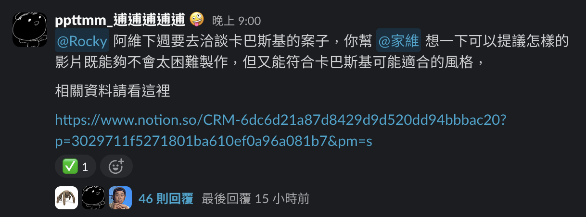

Rocky 使用指南
原則上 Rocky 不用設定，直接在 Slack tag 他即可使用
在同一個對話串每一次跟他講話他都會回覆
同一個對話串盡量不要有不同主題，這樣比較不會出錯

Rocky 的記憶
Rocky 的記憶分兩個，一個是內建的記憶，另一個是存在 Obisidian 的 Vault 中
理論上他會自動記憶到這兩個記憶庫中，但保險起見，討論一個重要的事情後可以講這句請他存進 Obsidian 裡頭：
幫我存到 OB
💡
當他存 Obsidian 記憶時，要確認他是存在這：
D:\Woolito Animation Dropbox\0_Woolito Animation Team Folder\Woolito Vault
如果不是，要請他改存到這邊跟 Rocky 溝通的技巧
- 不要單純問他問題，而是叫他做事，最好有明確的目的（不要把他當 ChatGPT）
- 如果是會重複執行的事情，帶他走一邊後請他做成 skill
- 不要讓他把產出的內容留在 slack，而是留在 文件 或是 Google Doc
- 比方說請他想文案，要讓他寫在 文件 裡